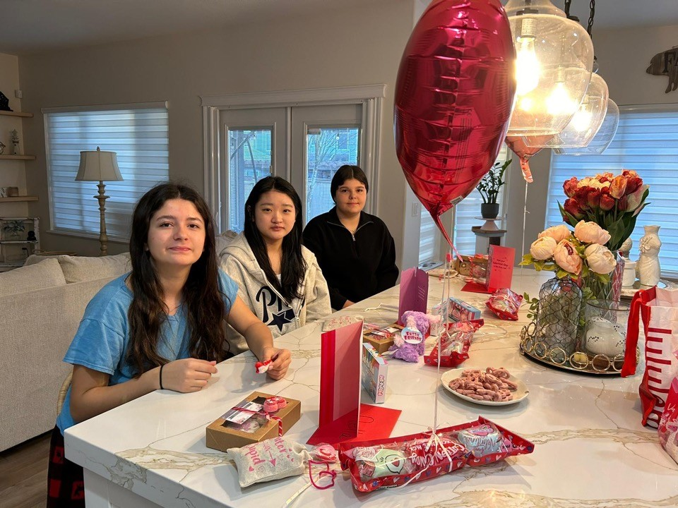
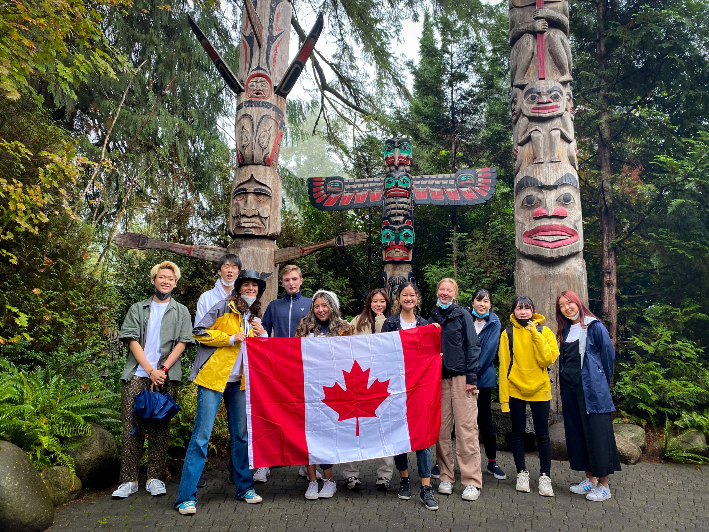

기숙사형과 동일한 1:1 입시관리 시스템 + 동일 기준 대비 연간 CA$4,000(약 400만 원) 저렴
PROGRAM SNAPSHOT
한눈에 보는 프로그램 개요
🎒
대상 학년
Grade 7~11 (중1~고2 전후)
🏠
숙소 형태
에듀스마트 엄선 홈스테이
🏫
학교 옵션
공립 4곳 · 사립 2곳 (총 6개)
🎯
핵심 시스템
1:1 내신·입시 컨설팅
ON SITE
홈스테이 생활과 현지 활동에듀스마트가 제공한 실제 프로그램 사진입니다

홈스테이에서 함께 생활하는 학생들 · 에듀스마트 제공

밴쿠버 현지 체험 활동 · 에듀스마트 제공
VIDEO
영상으로 먼저 확인하세요에듀스마트 공식 소개 영상
▲ 에듀스마트 공식 소개 영상
PREMIUM HOMESTAY
에듀스마트 프리미엄 홈스테이
🔍
엄격한 선발·배정·관리
수년간 좋은 평가를 받은 중상층 이상의 안전한 가정만 엄선 매칭
🏡
내 집 같은 편안함
가족처럼 보살피며 에듀스마트-가정 간 긴밀한 협력으로 생활 지원
💬
홈스테이의 장점
현지 문화 체험으로 실전 영어 자연스럽게 향상, 정서적 안정감
1:1 ACADEMIC CONSULTING
내신·입시 관리 시스템기숙사 관리형과 동일하게 적용
G10
FOUNDATION
흔들리지 않는 기초 완성
목표: 적성·진로 탐색, 과목 선택·성적 구조 설계
관리: 월 1회 대면 미팅
G11
BLUEPRINT
본격적인 입시 로드맵 설계
목표: 대학·전공 후보군, Goal-Reality 간극 분석
관리: 월 2회 대면 미팅
G12
EXECUTION
실전 입시 매니지먼트
목표: 최종 지원 전략, 에세이 구조 지도, 서류·일정 관리
관리: 월 2회 대면 + 상시 모니터링 · 단기 등록 불가
SCHOOL OPTIONS
코퀴틀람·포트코퀴틀람 6개 학교
공립
Summit Middle
Grade 6~8 · 약 750명 · Westwood Plateau
학구열 높은 인기 학교, 입학 경쟁 치열해 1년 전 지원 권장
공립 · 추가옵션
Maple Creek Middle
Grade 6~8 · 약 580~600명 · Port Coquitlam
홈스테이형에만 추가된 공립 옵션, 프랑스어 이머전(French Immersion)도 운영
공립
Terry Fox Secondary
Grade 9~12 · 약 1,500명 · Port Coquitlam
한국 학생 적고 유학생에 호의적, 내신 합리적 평가로 현지 답사에서 강력 추천
공립
Pinetree Secondary
Grade 9~12 · 약 1,500명 · Coquitlam Town Centre
코퀴틀람 센터·Douglas College·스카이트레인 인접, 생활 편의성 최고
사립
BC Christian Academy
Pre-K~12 (미들 5~8 / 하이 9~12)
한 반 20명 전후 소규모 클래스, 졸업률·대학진학률 높음 (에듀스마트 소개 기준)
사립
Archbishop Carney
Grade 8~12 · 약 500명 · 1994년 개교
가톨릭 사립학교, 학업·인성교육 균형, 자리 제한적이라 조기 지원 필요
💡 학교 선택 흐름 — Grade 7은 Summit Middle·Maple Creek Middle(공립) 또는 BCCA(사립 미들스쿨)로 시작 → Grade 9~11은 Terry Fox·Pinetree(공립) 또는 BCCA·Archbishop Carney(사립 하이스쿨) 중 선택. 정확한 학년별 배정·빈자리는 신청 시점에 확인하세요.
DAILY SCHEDULE
하루 일과 — 기숙사형과 가장 다른 부분
08:00 ~15:00
캐나다 정규학교 수업
6개 학교 중 배정된 학교에서 현지 정규 커리큘럼 이수
15:00 ~17:30
학습센터 — 영어 내신관리 수업
주 3회 1.5시간, 과목별 목표 점수 기반 모니터링
17:30~
홈스테이 복귀 · 저녁식사 · 개인시간관리
현지 가정 식문화 그대로 경험, 자율적인 저녁 시간 화요일만 온라인 문법·라이팅 19:00~20:30
📌 기숙사형과 비교
기숙사형은 원어민 회화·Homework Help 등 매일 저녁 구조화된 프로그램이 운영되지만, 홈스테이형은 화요일 온라인 수업 1회를 제외하면 홈스테이 가정에서 자율적으로 보내는 저녁입니다. 등하교 차량 운행, 평일 취침 전 전자기기 수거, G11·12의 학습센터 후 개별 귀가 방침은 동일하게 적용됩니다.
학교별 등교/하교: Terry Fox 08:00/14:05 · Carney 08:20/14:45 · BCCA High 08:25/14:50 · BCCA Middle 08:35/15:00
SERVICES
학업 관리 및 생활 서비스
🏫 학업 / 관리 서비스
주중 집중수업: 영어 내신(주3회) + 문법(주1회) + 단어/독서/에세이(월1회)
목표 관리: 과목별 목표 점수 설정 · 두 달마다 리포트카드
대학 컨설팅: 캐나다 기본 제공 / 미국 대학은 추가 가능(G11-12)
1:1 과외(옵션): 과목별 $60~80/hr 별도
비교과 관리: 학교 봉사활동, 외부 스포츠·악기 프로그램 등록
학부모 소통: 단톡방·전화로 학생 소식 수시 공유
🏡 생활 / 액티비티 서비스
안전한 라이드: 등·하교 라이드 (G11·12는 학습센터 후 개별 귀가)
주말 액티비티(월 2회): 캠핑·피크닉·수영·볼링 등 (입장료/식사 개인 부담)
유료 투어(선택): 스키·골프·북미 지역 투어·아이비리그 투어 등
전반적 정착 지원: 공항 픽업, 귀국 지원, 은행/통신 가입 오리엔테이션
철저한 안전 케어: 24시간 안전관리, 병원 동행, 생활관리 업데이트
COST
프로그램 비용 (연간 기준)
학교 옵션
Grade 7~10
Grade 11~12
공립 4개교Terry Fox / Pinetree / Summit / Maple Creek
CA$65,700약 6,570만 원
CA$69,700약 6,970만 원
사립Archbishop Carney
CA$69,700약 6,970만 원
CA$73,700약 7,370만 원
사립BC Christian Academy
CA$72,700약 7,270만 원
CA$76,700약 7,670만 원
기숙사 관리형보다 연간 CA$4,000 저렴
약 400만 원 (2026.08 환율 기준) · 모든 학교 구분에서 동일하게 적용
●환율: 2026년 8월 기준 CAD/KRW 약 1,000원 적용, 환전 시점에 따라 변동 가능
●불포함: 교육청·사립학교 등록비, 교복, 학교 교재·준비물, 학교 액티비티, 악기 구입·렌트, 개인 액티비티, 용돈
●옵션: 1:1 과목 과외 $60~80/hr · 학습센터 월 4회 추가 시 $200 추가 · 학비 인상 시 차액 납부
HOMESTAY VS DORM
홈스테이 vs 기숙사, 어떤 가정에 맞을까요?
비교 항목
홈스테이
기숙사
비용
연간 약 430만 원 저렴
상대적으로 비쌈
식사
현지 가정 식문화 (문화체험형)
한식 위주 (직접 관리)
저녁 시간
가정에서 개인시간관리 (자율성↑)
매일 구조화된 프로그램
영어 노출
현지 가정과의 일상 대화
학습센터·기숙사 프로그램 중심
공립 학교 옵션
4개교 (Maple Creek 포함)
3개교
적합한 학생
자기관리 가능 · 현지 문화 적극 경험형
저녁까지 루틴으로 안정적 관리 원함
FAQ
학부모님이 자주 묻는 질문
Q1홈스테이 가족은 어떻게 정해지고, 미리 알 수 있나요?
에듀스마트가 자체 기준으로 관리해 온 가정 풀에서 학생의 성향·알러지·통학 거리 등을 고려해 배정합니다. 배정 결과는 보통 출국 전에 가족 구성, 주소, 연락처가 포함된 홈스테이 프로필로 전달됩니다. 출국 전 영상통화로 인사를 나누고 싶다면 요청하시면 조율되는 경우가 많으니, 아이의 긴장을 덜기 위해 신청해 보시길 권합니다.
Q2가족과 맞지 않으면 바꿀 수 있나요?
바꿀 수 있습니다. 다만 도착 직후의 어색함과 실제 부적응은 다릅니다. 보통 2~4주의 적응 기간을 두고, 그 후에도 식사·생활 규칙·소통 문제가 지속되면 교체를 진행합니다. 교체 자체에 추가 비용이 붙는 경우는 드물지만 새 가정 확보에 시간이 걸릴 수 있습니다. 문제가 생기면 참지 말고 바로 에듀스마트 담당자에게 알리도록 아이에게 미리 일러두세요.
Q3홈스테이는 학교에서 얼마나 먼가요?
코퀴틀람·포트코퀴틀람 권역 안에서 배정되며, 등하교와 학습센터 이동은 에듀스마트 차량이 담당하므로 통학은 걱정하지 않으셔도 됩니다. 통상 차량으로 10~20분 내 거리에 배정됩니다. 단 Grade 11·12는 학습센터 수업 후 스스로 귀가하므로, 이 학년이라면 배정 시 대중교통 경로를 함께 확인해 두시면 좋습니다.
Q4한 집에 다른 유학생도 있나요?
가정에 따라 다릅니다. 홈스테이는 보통 학생 1~3명을 받으며, 다른 국적 학생이 함께 있는 경우도 있고 학생 혼자인 경우도 있습니다. 영어 노출을 최대화하려면 '한국 학생이 없는 가정'을 요청하시는 것이 확실한 방법이고, 신청 시 명시하면 배정에 반영됩니다. 다만 조건을 좁힐수록 배정 가능한 가정이 줄어 시간이 더 걸릴 수 있습니다.
Q5한식을 못 먹으면 힘들어하지 않을까요?
이 부분이 기숙사형과의 가장 큰 차이입니다. 홈스테이는 현지 가정의 식문화를 그대로 따릅니다. 아침은 시리얼·토스트, 점심은 샌드위치 도시락, 저녁은 가정식이 일반적입니다. 이를 문화 경험으로 즐기는 학생에게는 장점이지만, 한식 의존도가 높은 학생에게는 초기 스트레스 요인이 됩니다. 한식이 꼭 필요하다면 코퀴틀람 기숙사 관리형(한식 3식)을 함께 검토하시는 편이 현실적입니다.
Q6방은 혼자 쓰나요?
네, 홈스테이는 1인 1실이 기본입니다. 침대·책상·옷장이 갖춰진 개인 방을 쓰고, 욕실은 가족 또는 다른 학생과 공유하는 경우가 많습니다. 지하층 방을 배정받는 경우도 흔한데, 캐나다 주택 구조상 지하가 정식 거주 공간이라 문제되지 않습니다. 화장실 개수와 방 위치가 중요하다면 배정 전에 확인 요청하세요.
Q7영어가 안 돼서 가족과 대화가 안 되면 어떡하죠?
처음 몇 주는 단답형 대화만 오가는 것이 정상이고, 대부분 2~3개월이면 일상 대화가 트입니다. 이 과정 자체가 홈스테이를 선택하는 이유이기도 합니다. 다만 아이가 방에만 있고 가족과 접점이 없어지는 상황은 방치하면 안 됩니다. 에듀스마트가 24시간 관리 채널로 홈스테이 가정과 상시 소통하므로, 이런 신호가 보이면 중재 요청을 하시면 됩니다.
Q8주말에 가족과 꼭 같이 있어야 하나요?
의무는 아닙니다. 주말은 월 2회 에듀스마트 단체 액티비티가 있고, 나머지는 개인 시간입니다. 홈스테이 가족의 나들이·생일파티 같은 활동에 초대받으면 참여하는 것이 관계에도 영어에도 도움이 되지만 강제는 아닙니다. 다만 대부분의 홈스테이 가정은 식사 시간만큼은 함께하기를 기대하니, 이 정도는 지키도록 안내하시는 것이 좋습니다.
Q9인터넷, 세탁, 교통비는 누가 부담하나요?
인터넷과 세탁은 홈스테이 비용에 포함되는 것이 표준입니다. 와이파이는 자유롭게 쓰고, 세탁기는 주 1~2회 사용하는 식으로 가정마다 규칙이 있습니다. 반면 휴대폰 요금, 개인 교통카드(콤패스카드) 충전, 개인 외출 비용은 학생 부담입니다. 프로그램 비용의 불포함 항목에도 개인 액티비티와 용돈이 명시되어 있습니다.
Q10결국 홈스테이와 기숙사, 뭘 골라야 하나요?
판단 기준은 딱 두 가지입니다. 첫째, 아이가 저녁 시간을 스스로 관리할 수 있는가. 기숙사는 매일 저녁 학습 프로그램이 돌아가지만 홈스테이는 화요일 온라인 수업 외에는 자율입니다. 둘째, 한식과 현지 문화 중 무엇이 더 중요한가. 스스로 공부하는 습관이 잡혀 있고 현지 가정 문화를 경험하고 싶다면 홈스테이가, 저녁까지 잡아줘야 하고 식사가 걱정된다면 기숙사가 맞습니다. 비용 차이는 연 430만 원으로, 이 판단을 뒤집을 만큼 크지는 않습니다.